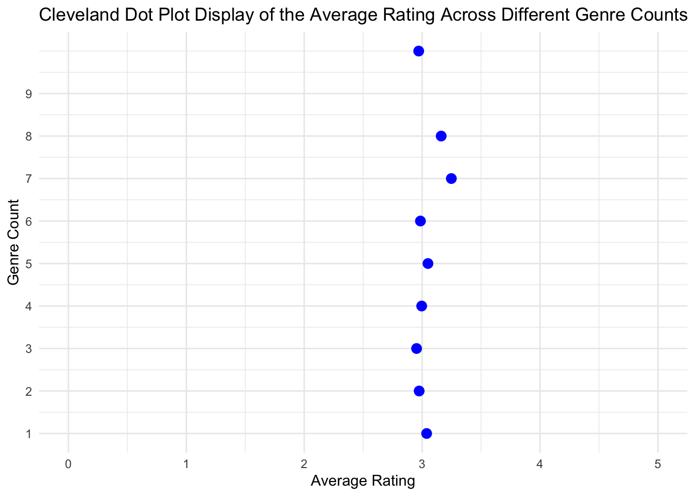

Topic 1: Are certain genre selections correlated? Specifically, for people who watch a lot of movies of a particular genre, are they more likely to gravitate toward another genre, or perhaps they are more likely to steer clear of a different genre?
Code
library(dplyr)
Attaching package: 'dplyr'
The following objects are masked from 'package:stats':
filter, lag
The following objects are masked from 'package:base':
intersect, setdiff, setequal, union
── Conflicts ────────────────────────────────────────── tidyverse_conflicts() ──
✖ dplyr::filter() masks stats::filter()
✖ dplyr::lag() masks stats::lag()
ℹ Use the conflicted package (<http://conflicted.r-lib.org/>) to force all conflicts to become errors
Code
library(ggplot2)library(gridExtra)
Attaching package: 'gridExtra'
The following object is masked from 'package:dplyr':
combine
data <- user_genre_proportions[, !names(user_genre_proportions) %in%"userId"]# Ensure the column names are valid (e.g., no special characters)colnames(data) <-make.names(colnames(data))# Select the columns for the specific pairs you want to plot (removing "Children" and "Fantasy")pairs_to_plot_p <-list(c("Adventure", "Fantasy"),c("Adventure", "Action"),c("Animation", "Children"),c("Animation", "Fantasy"),c("Children", "Musical"),c("Action", "Sci.Fi") # Keep Sci.Fi as is since make.names() converts it)# Calculate correlations for each paircorrelations <-sapply(pairs_to_plot_p, function(pair) {cor(data[[pair[1]]], data[[pair[2]]], use ="complete.obs")})# Create individual scatter plots for each pair, adding the correlation value as textplot_list <-lapply(1:length(pairs_to_plot_p), function(i) { pair <- pairs_to_plot_p[[i]]# Replace Sci.Fi with Sci-Fi in the titles plot_title <-gsub("Sci.Fi", "Sci-Fi", paste(pair[1], "vs", pair[2]))ggplot(data, aes(x = .data[[pair[1]]], y = .data[[pair[2]]])) +geom_point() +labs(title = plot_title) +# Only add the title, leave axis labels unchangedannotate("text", x =max(data[[pair[1]]]), y =max(data[[pair[2]]]), label =paste("r =", round(correlations[i], 2)), hjust =1, vjust =1, color ="blue") +theme_minimal() +theme(plot.title =element_text(size =9), # Smaller plot titleaxis.title.x =element_text(size =8), # Smaller x-axis titleaxis.title.y =element_text(size =8), # Smaller y-axis titleplot.margin =margin(t =15, r =5, b =5, l =5) # Increase top margin )})# Arrange the plots into one panel with adjusted marginsgrid.arrange(grobs = plot_list, ncol =3)# Adjust the position of the panel title to avoid clippinggrid.text("Positive Correlation between Genre Selection", x =0.5, y =0.982, gp =gpar(fontsize =13, fontface ="bold"))

These pairs of genres demonstrate a relatively high positive correlation with each other, meaning that for each pair (A, B) shown in the graph, people who watch a lot of movies in genre A are more likely to also watch lots of movies in genre B.
Code
# Select the columns for the specific pairs you want to plot (removing "Children" and "Fantasy")pairs_to_plot_n <-list(c("Adventure", "Drama"),c("Romance", "Action"),c("Comedy", "Thriller"))# Calculate correlations for each paircorrelations <-sapply(pairs_to_plot_n, function(pair) {cor(data[[pair[1]]], data[[pair[2]]], use ="complete.obs")})# Create individual scatter plots for each pair, adding the correlation value as textplot_list <-lapply(1:length(pairs_to_plot_n), function(i) { pair <- pairs_to_plot_n[[i]]# Replace Sci.Fi with Sci-Fi in the titles plot_title <-gsub("Sci.Fi", "Sci-Fi", paste(pair[1], "vs", pair[2]))ggplot(data, aes(x = .data[[pair[1]]], y = .data[[pair[2]]])) +geom_point() +labs(title = plot_title) +# Only add the title, leave axis labels unchangedannotate("text", x =max(data[[pair[1]]]), y =max(data[[pair[2]]]), label =paste("r =", round(correlations[i], 2)), hjust =1, vjust =1, color ="blue") +theme_minimal() +theme(plot.title =element_text(size =9), # Smaller plot titleaxis.title.x =element_text(size =8), # Smaller x-axis titleaxis.title.y =element_text(size =8), # Smaller y-axis titleplot.margin =margin(t =15, r =5, b =5, l =5) # Increase top margin )})# Arrange the plots into one panel with adjusted marginsgrid.arrange(grobs = plot_list, ncol =3)# Adjust the position of the panel title to avoid clippinggrid.text("Negative Correlation between Genre Selection", x =0.5, y =0.982, gp =gpar(fontsize =13, fontface ="bold"))
These pairs of genres demonstrate a relatively high negative correlation with each other, meaning that for each pair (A, B) shown in the graph, people who watch a lot of movies in genre A are more likely to not watch movies in genre B.
Topic 2: Could movie ratings include people’s bias? If people tend to watch lots of movies of a certain genre, is it more likely that they would rate that specific genre higher?
Warning: Removed 18113 rows containing non-finite outside the scale range
(`stat_boxplot()`).
By using a proportion cutoff of 0.7, we divide all ratings into two categories: ratings for genres that a specific user watches frequently (when the proportion is greater than or equal to 0.7) and ratings for genres they watch less frequently (when the proportion is less than 0.7). From the boxplot, we can tell that there is a difference in the distribution of average ratings between these two groups, demonstrating that genres watched more often tend to receive higher ratings in general compared to those watched less often.
Topic 3: Do different genres tend to evoke different emotions in people?
# Merge sentiment and movie_ohe on 'movieId'combined_data <-merge(sentiment, movies_ohe, by ="movieId")# Select relevant columns (genres and sentiment_score)genre_columns <-c("Adventure", "Animation", "Children", "Comedy", "Fantasy", "Romance", "Drama", "Action", "Crime", "Thriller", "Horror", "Mystery", "Sci.Fi", "Documentary", "War", "Musical", "Western", "Film.Noir")# Reshape data to a long format for easier plottinglong_data <- combined_data %>%select(movieId, sentiment_score, all_of(genre_columns)) %>%pivot_longer(cols =all_of(genre_columns), names_to ="Genre", values_to ="In_Genre") %>%filter(In_Genre ==1) # Keep only rows where the movie belongs to a genrelong_data$Genre <-recode(long_data$Genre,"Sci.Fi"="Sci-Fi","Film.Noir"="Film-Noir")# Generate boxplotsggplot(long_data, aes(x = Genre, y = sentiment_score)) +geom_boxplot() +theme(axis.text.x =element_text(angle =45, hjust =1)) +labs(title ="Boxplot of Sentiment Scores by Genre",x ="Genre",y ="Sentiment Score")
In the dataset we used, users assigned tags to movies, which are words or phrases. We utilized the “syuzhet” package to derive the sentiment behind those tags. Positive values represent positive sentiments; zero means neutral sentiments; and negative values reflect negative sentiments. From the graph above, we observe that overall, genres that received a positive sentiment include: Animation, Children, Fantasy (slightly positive), Romance (slightly positive), and Musical. Genres that received a negative sentiment include: Action, Crime, Drama (slightly negative), Film-Noir, Horror, Mystery, Thriller, War, and Western. Genres that received a neutral sentiment are: Adventure, Comedy, Documentary, and Sci-Fi.